Images archive
These images record the earlier years of Shenton Park Observatory, from planetary imaging to deep-sky photography with a succession of telescopes and cameras. Much of the early astrophotography was made with the computerised 10-inch Schmidt–Cassegrain used when the observatory was established in 2001.
Increasing light pollution in suburban Perth has made faint deep-sky imaging more difficult over time. A selection of photographs remain here as a historical record, alongside the observatory’s scientific focus.
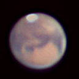
Mars 2003 ↗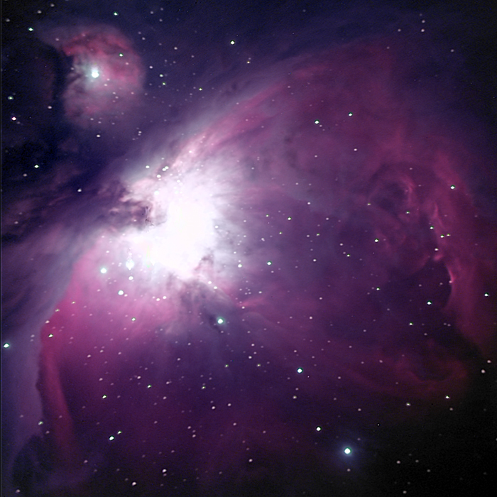
Nebulae ↗ Galaxies ↗
Galaxies ↗ Jupiter ↗
Jupiter ↗ Saturn ↗
Saturn ↗ Uranus ↗
Uranus ↗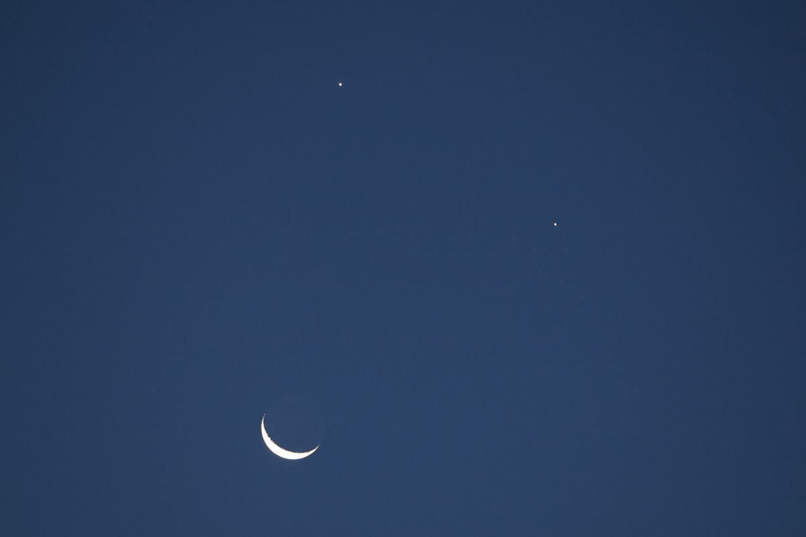
Conjunction ↗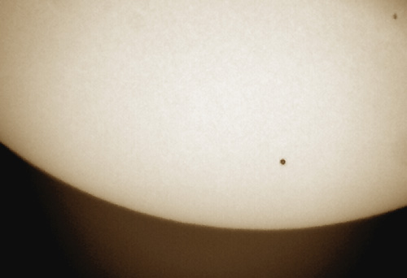
Mercury ↗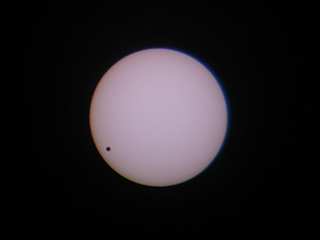
Venus ↗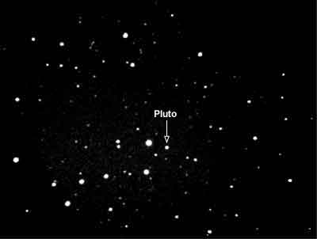
Pluto ↗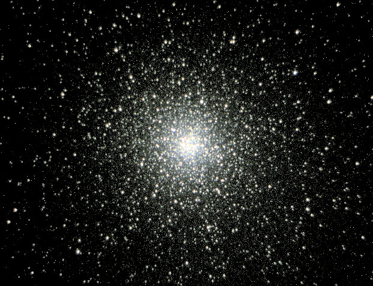
Clusters ↗ Moon ↗
Moon ↗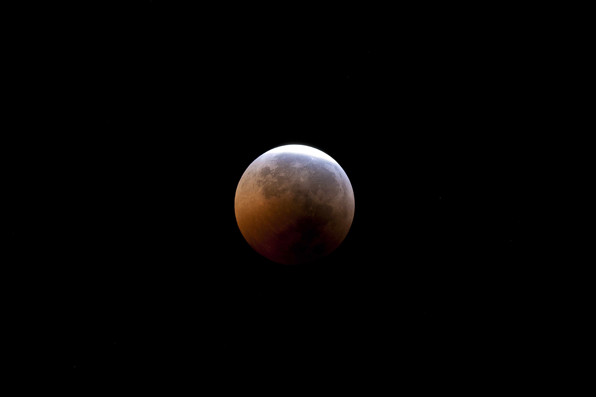
Lunar Eclipse - June 2011 ↗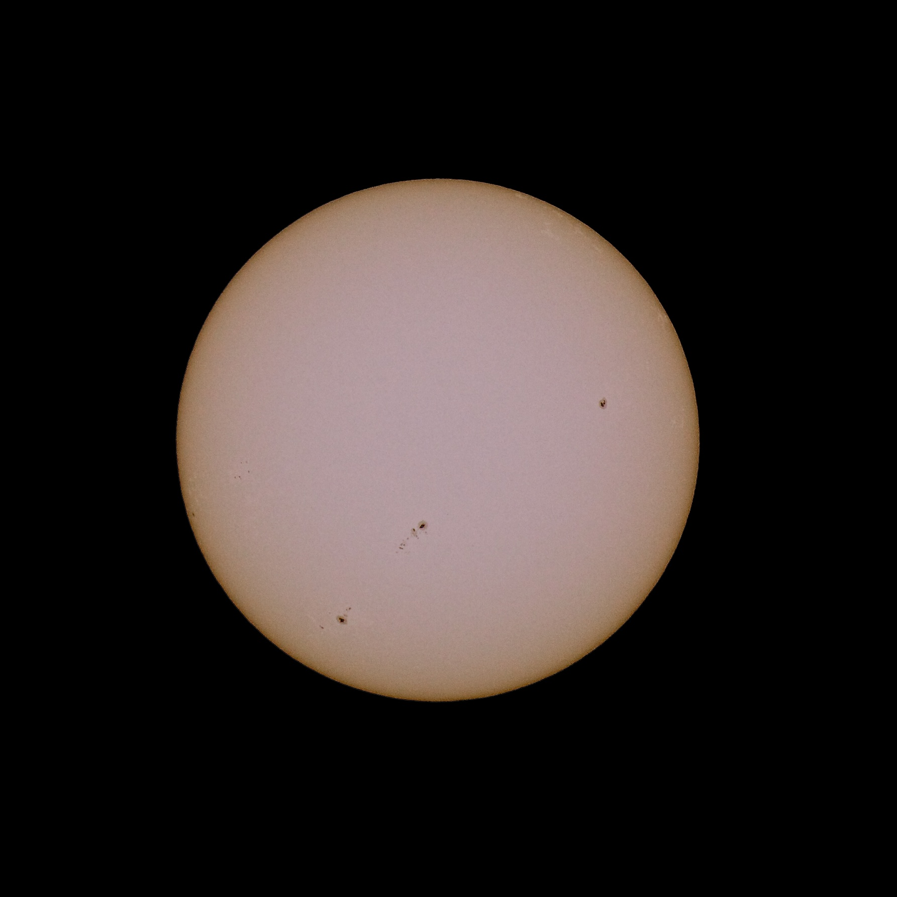
The Sun ↗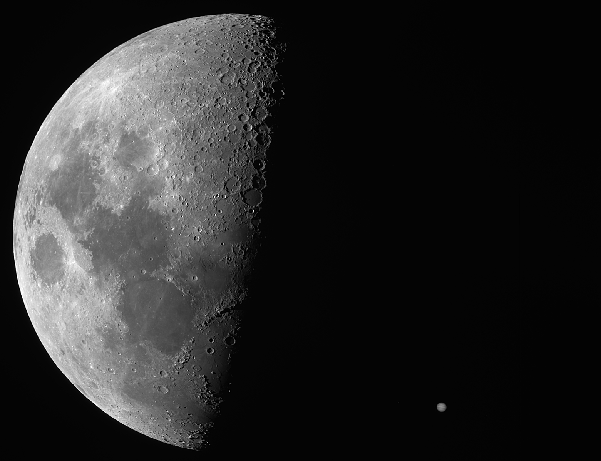
Occultation ↗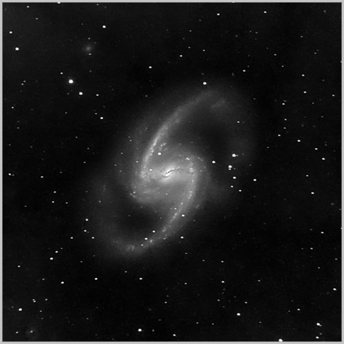
Project NGC ↗ Other astrophotography ↗
Other astrophotography ↗